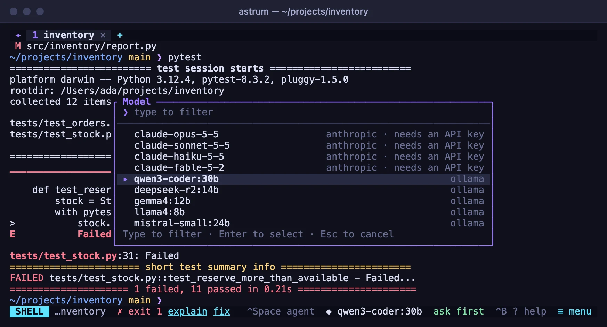
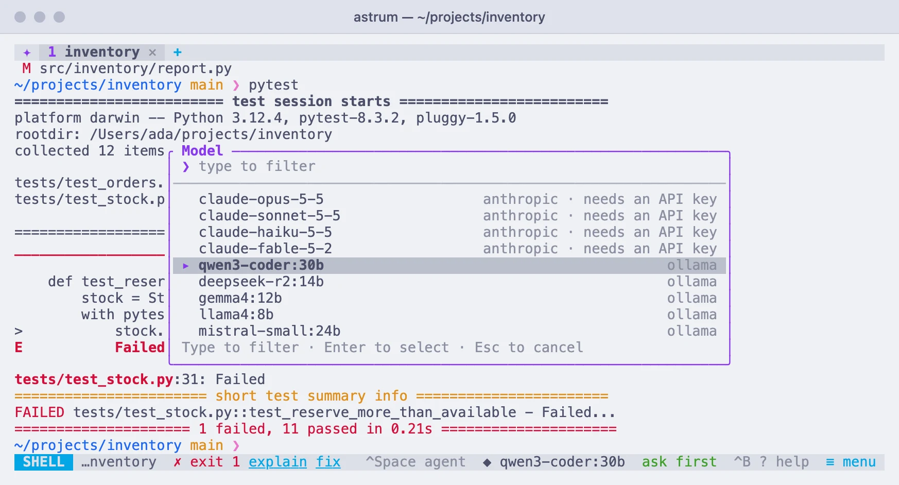

Providers and models
Connect the agent to Ollama, OpenAI or any compatible endpoint, Anthropic or Amazon Bedrock, keep API keys safe, and choose a model.
The providers Astrum knows
Out of the box Astrum knows four providers. Each is ready to use once what it needs is there:
| Provider | Kind | Where it is | Needs |
|---|---|---|---|
ollama | OpenAI-compatible | http://localhost:11434/v1 | Ollama running on this machine |
openai | OpenAI-compatible | https://api.openai.com/v1 | OPENAI_API_KEY |
anthropic | Anthropic | https://api.anthropic.com | ANTHROPIC_API_KEY |
bedrock | Amazon Bedrock | your AWS region | AWS credentials: a Bedrock API key in AWS_BEARER_TOKEN_BEDROCK, or access keys in the environment, or a profile in ~/.aws |
A local Ollama needs no key (one in OLLAMA_API_KEY is sent if it is set). Any other endpoint that speaks the OpenAI chat API, such as a local model server, a hosted service or a company gateway, can be added in the config file; see Adding a provider.
/providers in the agent panel lists what is configured: each provider's kind and address, whether it has a key (for Bedrock, its region and where its credentials come from), and which one is in use.
Choosing a model
Click the model name on the status bar (◆ and the name, or choose model before there is one). A list opens of the models your providers offer, each with its provider beside it. Type to narrow it, click a model or press Enter to choose it, and press Esc to leave things as they were. The same list is under ≡ menu → Choose a model and ≡ menu → Settings → Model, and behind Ctrl+B m and /model in the panel.
- Each provider is asked for its models when the list opens, so new models appear without an Astrum update. The list's bottom line names any provider that could not be reached, and why.
- A hosted OpenAI-compatible provider with no key is not asked. An Anthropic provider without a key shows its usual models, marked "needs an API key".
models = [...]in a provider's table adds names to the list, for an endpoint that does not list its models, or one whose list you may not read.
To name a model directly, type /model anthropic/claude-haiku-5-5 (the provider, a slash, and the model), or /model and a name alone for a model of the provider in use.
The choice is remembered, in this session and the ones after it. It is the session's, not the tab's: every tab's agent uses it from its next request. To set the model in the config file instead:
[agent]
provider = "anthropic"
model = "claude-sonnet-5-5"A choice made inside Astrum takes the place of these until you choose "Forget the choices made here" on the settings screen.


Adding a provider
Each provider is a table under [providers], and its name is the one you use in /model, /key and provider =:
[providers.work]
kind = "openai"
base_url = "https://llm.example.com/v1"
api_key_env = "WORK_LLM_KEY"
models = ["my-model"]| Setting | What it is |
|---|---|
kind | openai for any OpenAI-compatible endpoint, anthropic, or bedrock. |
base_url | Where the API is. For an OpenAI-compatible endpoint, requests go to base_url followed by /chat/completions, and the list of models is read from base_url followed by /models. |
api_key_env | The environment variable that holds the API key. |
api_key | The key itself. Simple, but the key then sits in a plain file; see API keys. |
models | Models to offer in the list, beside what the endpoint lists itself. |
region, profile | For Bedrock: see Amazon Bedrock. |
Saving the config file is enough: a running session takes the change at once, and /model offers the new provider's models. The agent always offers the model its tools, so a model behind an OpenAI-compatible endpoint needs to support tool calls (function calling).
A table named after a built-in provider and of the same
kind, such as[providers.ollama]withkind = "openai", changes only what it sets: an address or key variable it leaves out is the built-in one's. A table of another kind under a built-in's name is yours alone, and needs everything.
API keys
A provider's API key can come from three places, used in this order:
api_keyin the config file. Simple, but the key sits in a plain file.- The system's password store, where
/keyputs it. - An environment variable, such as
ANTHROPIC_API_KEY(the one the provider'sapi_key_envnames).
Storing a key with /key
In the agent panel, /key anthropic asks for the key and shows it as dots while you type or paste it. Enter stores it in the system's password store: the macOS keychain, or on Linux the desktop keyring, through secret-tool (from the package libsecret-tools). It is used from then on, in every session, with nothing in your shell setup. A key typed this way is kept out of the conversation and out of the prompt's history.
/keyalone shows where each provider's key is coming from./key anthropic removeforgets the stored key./key anthropicfollowed by the key on the same line stores it too, but the key is shown as you type it.
Keys in environment variables
A session's background server sees the environment as it was when the session started. If you set or change a key variable afterwards, tell the running session, from the shell that has the new value:
astrum reloadThat passes on the value of each provider's api_key_env variable from that shell, and reads the config file and the stored keys again, so it reports what each provider now uses. Add -s name for a session other than the default. /reload in the panel does the same, except for environment variables.
A session run as a login service starts with a bare environment, so keys set in your shell's startup files reach it only through astrum reload; /key avoids that altogether.
Anthropic
- Create an API key in the Claude Console.
In the agent panel, type
/key anthropicand paste it. Or set it in the shell you start Astrum from, and put the line in your shell's startup file to keep it for new terminals:export ANTHROPIC_API_KEY=sk-ant-...- Click the model name on the status bar (or type
/model) and choose a model. Models from this provider are labelledanthropic.
The model list comes from your account, so new models appear without an Astrum update. On models that support it, the model's reasoning is shown as a running summary on the panel's status line while it thinks. Anthropic's prompt cache is used, which is what the cached figure on the panel counts.
For Anthropic's Fable, Opus and Sonnet 5.x models, Astrum opts in to server-side fallback: if a safety classifier declines a request, the API runs it again on another model instead of stopping.
To use a different variable name, or a gateway in front of the API:
[providers.anthropic]
kind = "anthropic"
api_key_env = "MY_ANTHROPIC_KEY"
# base_url = "https://gateway.example.com"Amazon Bedrock
Bedrock needs AWS credentials and a region. Point Astrum at them in the config file:
[providers.bedrock]
kind = "bedrock"
region = "us-west-2"
profile = "my-profile" # a profile from ~/.aws/credentials or ~/.aws/configThen click the model name on the status bar, or type /model. Models from this provider are labelled bedrock.
Astrum looks for credentials in this order and uses the first it finds:
- A Bedrock API key: one stored with
/key bedrock, or the variableapi_key_envnames, which isAWS_BEARER_TOKEN_BEDROCKunless you name another. AWS_ACCESS_KEY_IDandAWS_SECRET_ACCESS_KEY(withAWS_SESSION_TOKENif set) in the environment. These are skipped when the provider names aprofile.- An AWS profile: the provider's
profilesetting, elseAWS_PROFILE, elsedefault. Access keys in the profile, acredential_process, single sign-on and assumed roles all work. Single sign-on and assumed roles are resolved through the AWS CLI, which must be installed; runaws sso login --profile my-profilefirst.
The region comes from the provider's region setting, then AWS_REGION or AWS_DEFAULT_REGION, then the profile's own region, and is us-east-1 if none of those is set. Set it explicitly if your models are enabled elsewhere. base_url in the table, if you set it, replaces the address requests to run a model are sent to (https://bedrock-runtime.<region>.amazonaws.com).
Things to know:
- Model names. The list offers the models your account can call in that region. Most current models are offered through cross-region ids that start with a geography, such as
us.anthropic.claude-haiku-5-5orglobal.anthropic.claude-sonnet-5-5; use those ids as listed. - Which models work. Astrum uses Bedrock's Converse API, so models from any vendor work as long as they support streaming with tool use. One that does not is refused by Bedrock with a message saying so.
- Permissions. The credentials need
bedrock:InvokeModelWithResponseStreamto run the agent, andbedrock:ListInferenceProfilesandbedrock:ListFoundationModelsto fill the model list. Without the listing permissions, name the models yourself withmodels = ["us.anthropic.claude-haiku-5-5"]in the provider's table. - Temporary credentials. Astrum reads profile credentials again every ten minutes, so refreshed ones are picked up without a restart. When they expire, Bedrock's error appears in the agent panel; refresh them and ask again.
- The environment. AWS credentials are read from
~/.awsor from the environment the session started with.astrum reloadpasses on the Bedrock API key variable, as it does any provider's key, but notAWS_ACCESS_KEY_ID,AWS_PROFILE,AWS_REGIONor the other AWS variables.
Context windows
How full the model's context is, shown at the top of the agent panel, and when a long conversation is compacted (see Long conversations) both depend on how much the model accepts. Astrum finds that out as follows, using the first that applies:
A
context_windowyou set in the config file:[models."my-local-model"] context_window = 32000Name the table
"provider/model", as in[models."work/my-model"], to cover one provider only.- What the provider reports, asked once per model when you first use it: Anthropic describes each model's input limit, and Ollama running on the same machine lists it for the models it forwards to a hosted service.
- Otherwise an assumption: 128,000 tokens for OpenAI-compatible models, and 200,000 for Anthropic and Amazon Bedrock.
A model that Ollama runs on your own machine falls under 3 even though Ollama reports a size for it, because Ollama serves a local model with the context it was set up to give it, which can be much less than the model's maximum. Set context_window for those. A figure that is too low only means compacting earlier than necessary; one that is too high means the conversation will not be compacted in time by itself. /usage shows the figure in use.
Reply length
max_tokens under [agent] limits how many tokens one reply may have:
[agent]
max_tokens = 16000Unset, Astrum asks Anthropic for up to 32,000 tokens and leaves the limit to the provider elsewhere. A reply cut off at the limit stops the turn, with a message saying so: raise max_tokens, or ask for a shorter answer.